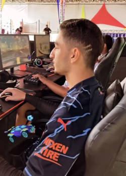

Seja Bem vindo(a)
Biografia

Nome: Arthur Carvalho Fontinele
Apelido: Fontis
Idade: 18
Olá meu nome é Arthur Carvalho Fontinele, mas podem me chamar de fontis, tenho 18 anos, e tenho muitos objetivos para a minha vida, atualmente estou focado em sempre evoluir e buscar o progresso, justamente por isso, estou no foco de ir para a academia, estudo html, css e javaScript, estudo também investimentos na plataforma Finclass estou ampliando meu conhecimento para diversas áreas onde eu vejo que me interesso e vejo que fará bem para mim, tenho o sonho de adquirir minha independência financeira, e para isto ocorrer preciso concluir algumas mini metas antes, como o exemplo de começar a trabalhar com o que eu gosto que é desenvolver sites ou até mesmo apps, segue em neste link um projeto meu esta área sempre me chamou, e vejo que o mercado é muito promissor, minha meta é que com meus 25 anos eu pelo menos esteja uns 75% da minha meta concluída, eu tenho um sonho também de contruir uma família, ter dois filhos com minha futuro parceira, tenho um desejo enorme de morar no canadá e ficar trabalhando home office, admiro muito quem já possui todas essas coisas antes dos 30, tenho um amor incomparável por Deus também, até porque foi ele que me fez enxergar que eu precisava evoluir e parar de ficar procastinando, quero muito que minha futura esposa também admire Deus como eu. Estou terminando o ensino médio, ainda não bateu o sentimento que tudo acabou, eu sinto mais é medo de não conseguir passar no vestibular e etc, medo de todos os meus planos atrasarem por culpa de eu não passar no vestibular. Bom falei muito já de mim vamos para a as minhas características agora:
Características
- Físicas
- Cabelo preto e curto
- 1,75 de altura
- Olhos castanhos
- Cavanhaque e bigode
- Psicológicas
- Inteligente
- Carinhoso
- Esforçado
- Focado
- Religioso
- Estudioso
Conquistas
- Troféu de artilheiro
- Recebi um troféu por ser o artilheiro de um campeonato interno da minha escola
- Medalha de olimpiada acadêmica
- Recebi uma medalha da olimpidada de física onde é realizada no Brasil todo por ser o terceiro melhor nela